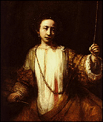

The Minneapolis Institute of Arts
Main Menu ~ Permanent Collection List ~ Interactive Museum Maps ~ Back ~ Next
European 15th- to 17th-Century Art
 (c) 24k
Rembrandt's masterpiece "Lucretia" is the heart of a collection of 15th- through17th-century portraits, landscapes, still-lifes, and marine paintings. This collection includes an interactive program.